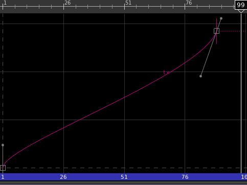

sabotage3d
Hi , looking at the specifications of the .ani file format it looks like it doesn’t support animation interpolation. What would be the best parctice for exporting animation from another package where we have a few keyframes using spline interpolation and we have slope and acceleration on the tangents. One solution would be to export each frame sampling at 24-30 frames per second, but which one is more efficient reading interpolation or reading every frame.
